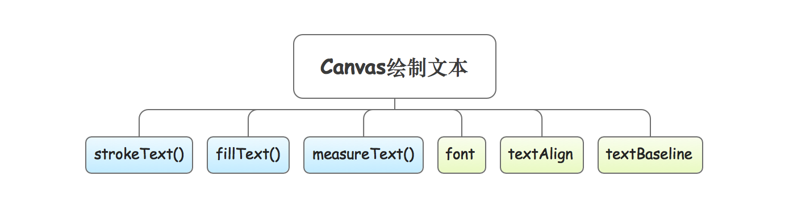
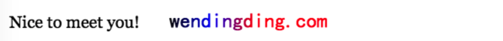

本文将介绍Canvas画布绘制文本相关的技术细节。
Canvas画布绘制文本

**核心API**
绘制文本(描边)
语法 ctx.strokeText( text , x , y , [ maxWidth ]);
作用 用于在画布上绘制文本(描边·没有填色)。
说明 文本的颜色为黑色，可以通过strokeStyle属性来设置颜色或渐变。
参数
- text 绘制的文本信息
- x 文本的X轴坐标
- y 文本的Y轴坐标
- maxWidth 允许的最大文本宽度，单位为像素
示例
1
2
3
4
5
6
7
8
9
10
11
12
13
14
15
16
17
| var canvas = document.getElementById("canvas");
var ctx = canvas.getContext("2d");
ctx.font="20px Impact";
ctx.strokeText("Nice to meet you!",10,50);
var gradient = ctx.createLinearGradient(200,0,300,0);
gradient.addColorStop("0","black");
gradient.addColorStop("0.5","blue");
gradient.addColorStop("1.0","red");
ctx.font="25px KaiTi";
ctx.strokeStyle = gradient;
ctx.strokeText("wendingding.com",200,50);
|
 **绘制文本(填充)**
**绘制文本(填充)**
语法 ctx.fillText( text , x , y , [ maxWidth ]);
作用 用于在画布上绘制填色的文本。
说明 文本的颜色为黑色，可以通过fillStyle属性来设置颜色或渐变。
参数
- text 绘制的文本信息
- x 文本的X轴坐标
- y 文本的Y轴坐标
- maxWidth 允许的最大文本宽度，单位为像素
示例
1
2
3
4
5
6
7
8
9
10
11
12
13
14
15
16
17
18
| var canvas = document.getElementById("canvas");
var ctx = canvas.getContext("2d");
ctx.font="20px Georgia";
ctx.fillText("Nice to meet you!",10,50);
var gradient = ctx.createLinearGradient(200,0,300,0);
gradient.addColorStop("0","black");
gradient.addColorStop("0.5","blue");
gradient.addColorStop("1.0","red");
ctx.fillStyle = gradient;
ctx.font="25px KaiTi";
ctx.fillText("wendingding.com",200,50);
|

计算文本信息的宽度
语法 ctx.measureText( text ).width;
作用 用于计算和返回指定文本的宽度，单位以像素计。
说明 measureText方法返回的本身是一个对象，我们需要用过width来获取宽度值。
参数 text表示要测量的文本。
**文字绘制相关属性介绍**
**font** 设置文字的字号和字体等信息。
**textAlign** 设置水平对齐方式，可选值有`start(默认) | end | left | right | center`。
**textBaseline** 设置垂直对齐方式，可选值有`alphabetic(默认) | top | middle | bottom | hanging | ideographic`。其中`hanging`表示文本基线是悬挂基线，`ideographic`表示文本基线是表意基线。
1
2
3
4
5
6
7
8
9
10
11
12
13
14
15
16
17
18
19
20
21
22
23
24
25
26
27
28
29
30
31
32
33
34
35
| var canvas = document.getElementById("canvas");
var ctx = canvas.getContext("2d");
var str = "How are you?";
ctx.font = "30px Times New Roman";
ctx.strokeText(str,50,50);
ctx.fillText(str,50,100);
ctx.fillText(str,50,150,120);
console.log(ctx.measureText(str).width);
ctx.moveTo(100,0);
ctx.lineTo(100,ctx.canvas.height);
ctx.stroke();
ctx.beginPath();
var textAlignArr = ["start","end","left","right","center"];
for(var i = 0;i<textAlignArr.length;i++)
{
ctx.textAlign = textAlignArr[i];
ctx.fillText(str,100,200 + (50 *(i + 1)));
}
ctx.moveTo(0,200);
ctx.lineTo(ctx.canvas.width,200);
ctx.stroke();
ctx.beginPath();
str = "正";
var textBaselineArr = ["alphabetic","top","hanging","middle","ideographic","bottom"];
for(var i = 0;i<textBaselineArr.length;i++)
{
ctx.textBaseline = textBaselineArr[i];
ctx.fillText(str,100 + (80 *(i + 1)),200);
}
|
Canvas实现文字竖排案例
1
2
3
4
5
6
7
8
9
10
11
12
13
14
15
16
17
18
19
20
21
22
23
24
25
26
27
28
29
30
31
32
33
34
35
36
37
38
39
40
41
42
43
44
45
46
47
48
49
50
51
52
53
54
55
56
57
58
59
60
61
62
63
64
65
66
67
68
69
70
71
72
73
74
75
76
77
78
79
80
81
82
83
84
85
86
87
88
89
90
91
| <!DOCTYPE html>
<html lang="en">
<head>
<meta charset="UTF-8">
<meta name="viewport" content="width=device-width, initial-scale=1.0">
<meta http-equiv="X-UA-Compatible" content="ie=edge">
<title>Document</title>
</head>
<body>
<canvas width="1000px" height="700px" id="canvas"></canvas>
<script type="text/template" id="templateText">
#北冥有鱼， 其名為鲲， 鲲之大， 不知其幾千里也。 化而為鸟， 其名為鹏， 鹏之背， 不知其幾千里也。 怒而飞， 其翼若垂天之雲。 是鸟也， 海运則將徙於南冥， 南冥者， 天池也。
#齐谐者， 志怪者也。 谐之言曰： 鹏之徙於南冥也， 水擊三千里， 摶扶搖而上者九萬里。 去以六月息者也， 野马也， 塵埃也， 生物之以息相吹也。 天之苍苍， 其正色邪？ 其远而無所至极邪？ 其视下也， 亦若是則已矣。
#且夫水之积也不厚， 則其负大舟也無力。 覆杯水於坳堂之上， 則芥為之舟， 置杯焉則胶， 水浅而舟大也。 风之积也不厚， 則其负大翼也無力。 故九萬里， 則风斯在下矣， 而後乃今培风。 背负青天而莫之夭厄者， 而後乃今將圖南。
#蜩與學鸠笑之曰： “ 我決起而飞， 枪榆枋， 時則不至， 而控於地而已矣。 奚以之九萬里而南為？ ” 适莽苍者， 三飧而反， 腹犹果然。 适百里者， 宿舂粮。 适千里者， 三月聚粮。 之二虫， 又何知？
#小知不及大知， 小年不及大年。 奚以知其然也？ 朝菌不知晦朔， 惠蛄不知春秋， 此小年也。 楚之南有冥灵者， 以五百歲為春， 五百歲為秋； 上古有大椿者， 以八千歲為春， 八千歲為秋； 而彭祖乃今以久特闻， 眾人匹之， 不亦悲乎？
#汤之问棘也是已： 穷發之北有冥海者， 天池也。 有鱼焉， 其廣數千里， 未有知其修者， 其名為鲲。 有鸟焉， 其名為鹏， 背若泰山， 翼若垂天之雲， 摶扶搖羊角而上者九萬里， 绝雲气， 负青天， 然後圖南， 且适南冥也。
#斥鹌笑之曰： “ 彼且奚适也？ 我腾跃而上， 不过數仞而下， 翱翔蓬蒿之间， 耻亦飞之至也。 而彼且奚适也？ ” 此小大之辨也。
#故夫知效一官， 行比一鄉， 德合一君， 而征一國者， 其自视也， 亦若此矣。 而宋荣子犹然笑之。 且舉世誉之而不加勸， 舉世非之而不加沮。 定乎內外之分， 辨乎荣辱之境， 斯已矣。 彼其於世， 未數數焉也。 虽然， 犹有未树也。
#夫列子禦风而行， 泠然善也， 旬有五日而後反。 彼於致福， 未數數然也。 此虽免乎行， 犹有所待者也。
#若夫乘天地之正， 而禦六气之辩， 以游無穷者， 彼且惡乎待哉！ 故曰： 至人無己， 神人無功， 聖人無名。
</script>
<script>
var canvas = document.getElementById("canvas");
var ctx = canvas.getContext("2d");
var m = 30;
var h = ctx.canvas.height;
var w = ctx.canvas.width;
var count = Math.floor(w / m);
for (var i = 0; i <= count; i++) {
ctx.beginPath();
ctx.moveTo(i*m - 0.5 ,0);
ctx.lineTo(i*m - 0.5 ,h);
ctx.strokeStyle = "#1D244F";
ctx.stroke();
}
CanvasRenderingContext2D.prototype.fillTextVertical = function (text, x, y) {
var self = this;
self.textAlign = 'center';
self.textBaseline = 'middle';
var arrText = text.split('');
var arrWidth = arrText.map(function (letter) {
return self.measureText(letter).width;
});
arrText.forEach(function (letter, index) {
if(letter == "#")
{
y = 12 + 50;
x = x - 30;
return;
}
var letterWidth = arrWidth[index];
var code = letter.charCodeAt(0);
if (code <= 256) {
self.translate(x, y);
self.rotate(90 * Math.PI / 180);
self.translate(-x, -y);
} else if (index > 0 && text.charCodeAt(index - 1) < 256) {
y = y + arrWidth[index - 1] / 2;
}
self.fillText(letter, x, y);
self.setTransform(1, 0, 0, 1, 0, 0);
var letterWidth = arrWidth[index];
y = y + letterWidth;
if(y >= (self.canvas.height - 12))
{
y = 12;
x = x - 30;
}
});
};
var templateText = document.getElementById("templateText").innerText;
ctx.font = '20px STKaiti, sans-serif';
ctx.fillStyle = "#1D244F";
ctx.fillTextVertical("逍遥游( 上) · 庄子", canvas.width - 25, 0);
ctx.fillTextVertical(templateText, canvas.width - 25, 12);
</script>
</body>
</html>
|